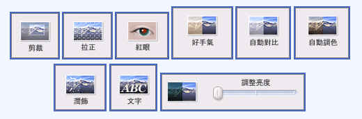

Picasa 是一套小巧又好用的『 相片管理程式 』，可以利用它輕鬆管理照片。 Picasa 有操作簡單效果佳的『 相片編修功能 』，調亮度、裁剪都能快速完成。 Picasa 提供精緻又漂亮的『 作品輸出功能 』， 有列印、作美術拼貼、網路相簿等。 Picasa 入門: 入門指南 _________________________________________________________________________________________
•安裝完Picasa後，第一次開啟選擇你要掃瞄全部的圖片之來源資料夾即可。 •打開Picasa，並點選需要編輯的圖片。可以使用〔基本修飾〕、〔調整〕、〔效果〕 等Picasa內建的編輯器，來調整圖片。 >基本修飾標籤 
>在 Picasa 中分享相片 •除了以上功能，特別介紹Picasa還能協助我們製作圖片網頁 •Picasa的美術拼貼，能快速簡單的減少我們的照片編輯作業喔~